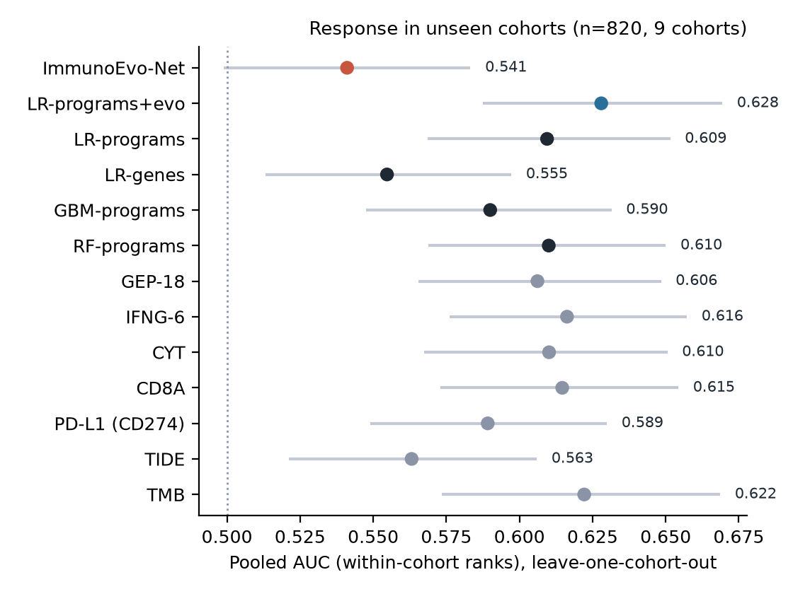
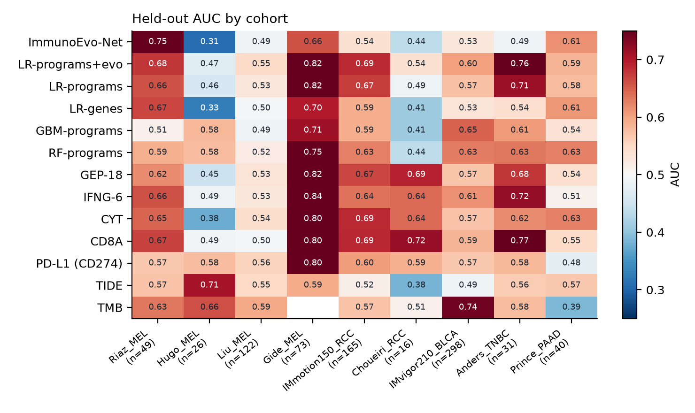
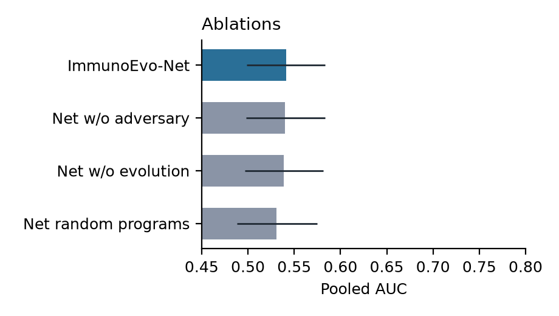
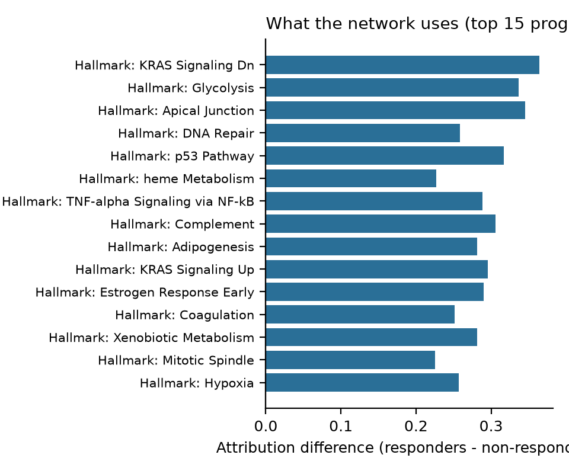
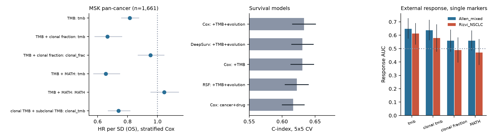
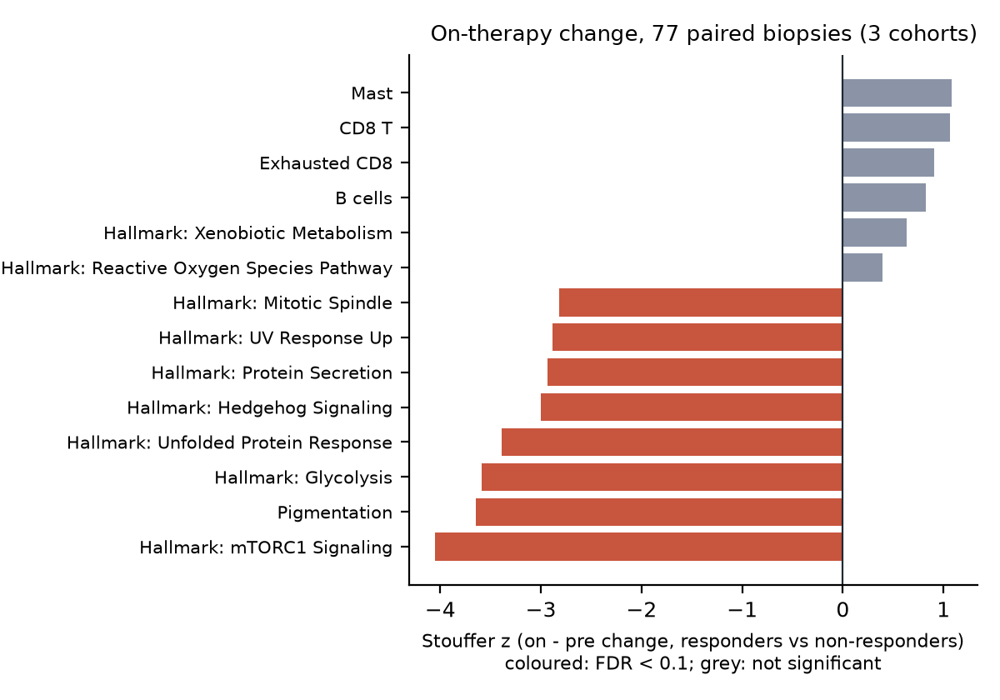

Headline
AUC 0.628pre-specified programme + TMB/ITH model in unseen cohorts (best of 16)
+0.064AUC over TIDE (p = 0.023); +0.022 over GEP-18 (p = 0.027)
0.541the deep network: it learned cohort and tissue confounders
HR 0.95, p = 0.31clonal fraction beyond TMB (MSK, n = 1,661): panel ITH adds little
z = −4.1mTORC1 falls more in responders on therapy (77 paired biopsies)
20,890 genes→73 knowledge programmes→+ TMB, MATH, clonal fraction→logistic model→leave-one-cohort-out
Negative results, reported in full:
- The knowledge-masked, cohort-adversarial deep network was specified in advance. It did not transfer (AUC 0.54), and it was not retuned after the results were seen.
- The best model is not significantly better than CD8A, IFN-γ or TMB alone. The ceiling for transferable prediction from bulk RNA is about 0.63.
- MATH and clonal fraction from targeted panels add nothing beyond TMB.
Leave-one-cohort-out benchmark
| Method | Pooled AUC | 95% CI | Cohorts with AUC > 0.5 |
|---|---|---|---|
| LR: 73 knowledge programmes + TMB/ITH (pre-specified) | 0.628 | 0.588–0.669 | 8 / 9 |
| TMB alone (n = 587) | 0.622 | 0.573–0.669 | 7 / 8 |
| IFN-γ 6-gene | 0.616 | 0.576–0.657 | 8 / 9 |
| CD8A | 0.615 | 0.573–0.654 | 7 / 9 |
| CYT | 0.610 | 0.567–0.651 | 8 / 9 |
| LR: programmes only | 0.609 | 0.569–0.652 | 7 / 9 |
| GEP-18 | 0.606 | 0.565–0.648 | 8 / 9 |
| PD-L1 (CD274) mRNA | 0.589 | 0.549–0.630 | 8 / 9 |
| TIDE | 0.563 | 0.521–0.606 | 7 / 9 |
| LR: 20,890 genes | 0.555 | 0.513–0.597 | 6 / 9 |
| ImmunoEvo-Net (deep, knowledge-masked, cohort-adversarial) | 0.541 | 0.499–0.583 | 5 / 9 |
Cohorts: Riaz, Hugo, Liu and Gide (melanoma); IMmotion150 and Choueiri (renal); IMvigor210 (urothelial); Anders (TNBC); Prince (pancreatic). The response labels are the cBioPortal/iAtlas harmonised RESPONDER calls. Pooled AUC is computed on within-cohort ranks; the CI comes from a bootstrap stratified by cohort.
Figures






Research prototype: not a medical device and not for clinical decisions. Data: public ICB cohorts via cBioPortal and CRI iAtlas; MSK-IMPACT ICB (Samstein et al., Nat Genet 2019). © 2026 Husain Naqvi. All Rights Reserved.